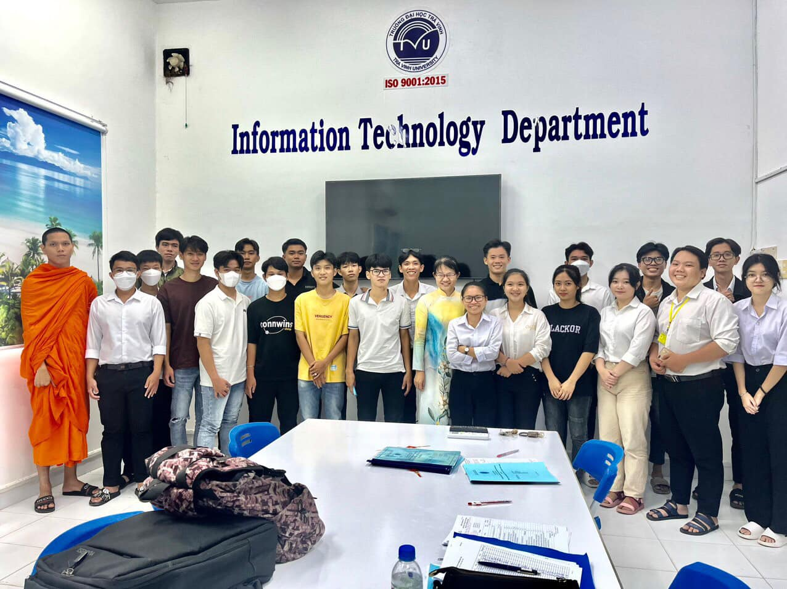
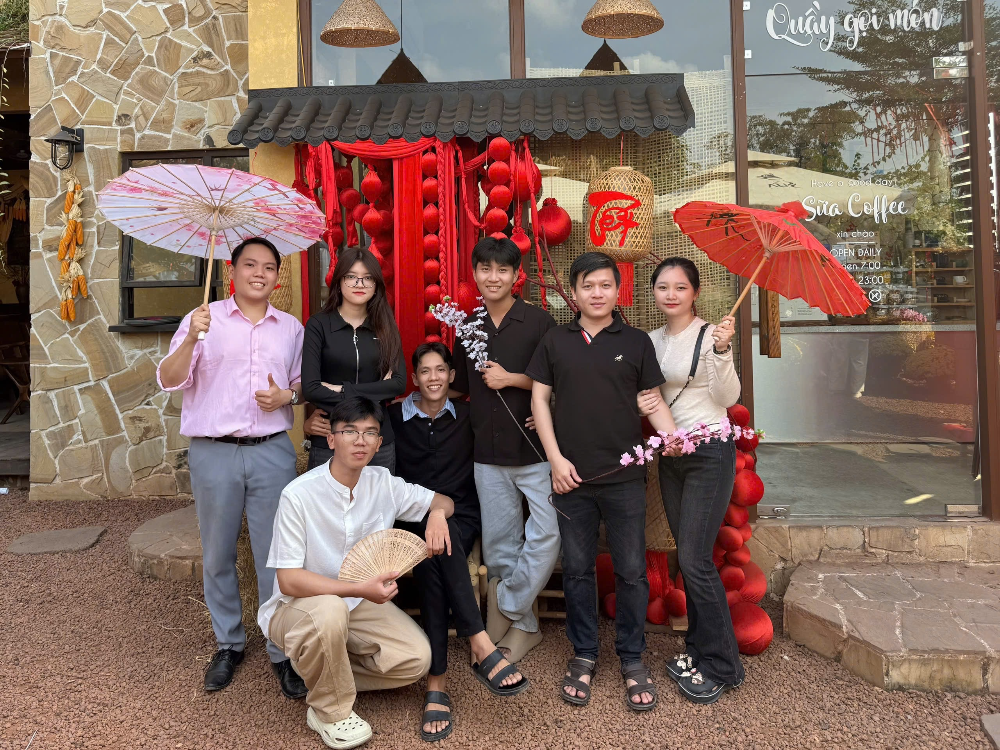

Trải nghiệm 4 năm đại học
Làm quen với môi trường đại học
Năm đầu tiên tại Đại học Trà Vinh là một trải nghiệm đầy mới mẻ. Tôi đã làm quen với môi trường học tập đại học, gặp gỡ nhiều bạn bè mới từ khắp nơi. Những môn học cơ bản về lập trình như C++, cấu trúc dữ liệu đã giúp tôi xây dựng nền tảng vững chắc.
- Tham gia câu lạc bộ Tin học
- Học các môn nền tảng: Toán, Lập trình C++, Cấu trúc dữ liệu
- Làm quen với Git và GitHub
Phát triển kỹ năng lập trình
Năm thứ hai, tôi bắt đầu tiếp cận với các công nghệ web như HTML, CSS, JavaScript. Tôi đã tham gia vào một số dự án nhóm nhỏ, học cách làm việc nhóm và quản lý mã nguồn hiệu quả. Đây là năm tôi phát triển nhiều nhất về kỹ năng lập trình.
- Học Web Development (HTML, CSS, JavaScript)
- Tham gia dự án nhóm đầu tiên
- Học cơ sở dữ liệu SQL
Chuyên sâu và thực tập
Năm thứ ba là năm tôi bắt đầu chuyên sâu vào các công nghệ hiện đại như React, Node.js. Tôi đã có cơ hội thực tập tại một công ty phần mềm địa phương, áp dụng những kiến thức đã học vào thực tế. Đây là trải nghiệm vô cùng quý báu giúp tôi hiểu rõ hơn về quy trình phát triển phần mềm chuyên nghiệp.
- Học React, Node.js, MongoDB
- Thực tập đồ án cơ sở ngành
- Phát triển dự án web hoàn chỉnh
- Học mạng máy tính
Hoàn thiện và chuẩn bị tốt nghiệp
Năm cuối cùng, tôi tập trung vào việc hoàn thiện đồ án tốt nghiệp và chuẩn bị cho sự nghiệp tương lai. Tôi đã tích lũy được nhiều kinh nghiệm quý báu, xây dựng được portfolio cá nhân và sẵn sàng bước vào thị trường lao động.
- Thực hiện đồ án tốt nghiệp
- Xây dựng portfolio cá nhân
- Thực tập tại trường THCS
- Chuẩn bị cho công việc sau khi tốt nghiệp
Kỷ niệm đáng nhớ

Năm nhất

Năm hai

Năm ba

Năm tư